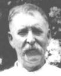

Brandon's Family Tree

Person Chart
Parents
| Father | Date of Birth | Mother | Date of Birth |
|---|---|---|---|
 William Worth Buchanan William Worth Buchanan |
26 Oct 1851 |  Mary Jane Lamie Mary Jane Lamie |
22 Jun 1855 |
Partners
| Partner | Date of Birth | Children |
|---|---|---|
| Ida Belle Horton (Buchanan) |
December 10, 1884 | Harry Eugene BuchananPaul Edward Buchanan Sr |
Person Events
| Event Type | Date | Place | Description |
|---|---|---|---|
 Birth Birth |
February 16, 1874 | St. Joseph, Missouri | |
| Marriage |
6/11/1900 | Chatham Hill, Smyth, Virginia, United States | |
| Place of Residence |
1910 | Ellendale, Smyth, Virginia | Age: 36Marital Status: Married; Relation to Head of House: Self; |
| Death |
November 22, 1933 | Chatham Hill, VA | Age: 59 |
| Death |
November 22, 1933 | Saltville, Va | |
| Burial |
Ridgedale (Smyth County), Smyth County, Virginia, USA |
Notes
| Perry http://trees.ancestry.com/rd?f=image&guid=265821cd-e78f-468c-9471-f8bd86bbb04f&tid=17284951&pid=42 |
Sources
| Description | Page | Quality | Information | Evidence |
|---|---|---|---|---|
| 1910 United States Federal Census, Ancestry.com Operations Inc |
Year: 1910; Census Place: Ellendale, Smyth, Virginia; Roll: T624_1649; Page: 6B; Enumeration District: 0089; FHL microfilm: 1375662 | Don't know | Don't know | Don't know |
| Ancestry Family Trees, Online publication - Provo, UT, USA: Ancestry.com. Original data: Family Tree files submitted by Ancestry members. |
Ancestry Family Tree | Don't know | Don't know | Don't know |
| Web: Virginia, Find A Grave Index, 1607-2012, Ancestry.com Operations, Inc. |
Don't know | Don't know | Don't know |